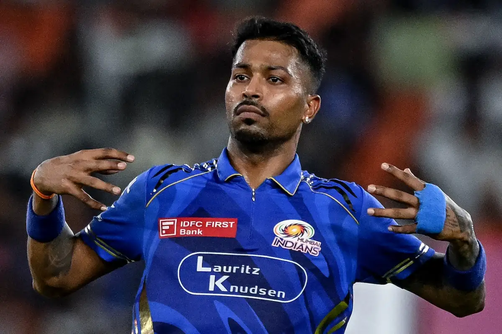
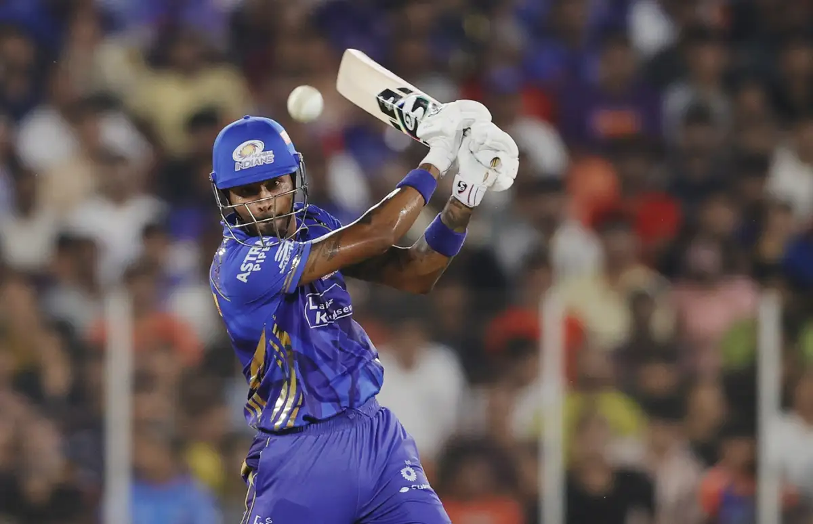

Hardik Himanshu Pandya (born 11 October 1993) is an Indian international cricketer who plays for the Indian cricket team. He is an all-rounder who is a right-handed middle order batsman and fast-medium bowler. He is considered one of the best all-rounders in the world in white-ball cricket. Pandya has represented India in all three formats. He captains Mumbai Indians in the Indian Premier League and occasionally plays for Baroda in domestic cricket.He has captained the Indian team in white-ball cricket and was the vice captain of the team that won the 2024 T20 World Cup.
 Hardik Pandya was born on 11 October 1993 in Choryasi, Surat, Gujarat. His father, Himanshu Pandya, ran a small car finance business in Surat which he shut down and moved to Vadodara when Hardik was five to provide his sons with better cricket training facilities. Himanshu Pandya worked as a loan consultant in Vadodara.[3] He enrolled his two sons into Kiran More's cricket academy in Vadodara.[4] Lacking finances, the Pandya family lived in a rented apartment in Gorwa, with the brothers using a second-hand car to travel to the cricket ground.[3] Hardik studied at the MK High School until ninth grade before dropping out to focus on cricket.[5] Hardik made steady progress in junior-level cricket, and according to Krunal, "won a lot of matches single-handedly" in club cricket.[4]In an interview with the Indian Express, Hardik said that he was dropped from his state age-group teams due to his "attitude problems". He added that he was "just an expressive child" who did not "like to hide his emotions."[6] According to his father, Hardik was a leg spinner until the age of 18 and turned to fast bowling at the insistence of the Baroda coach Sanath Kumar.[7]
Pandya has been playing for the Baroda since 2013. He played a vital role in helping Baroda win the Syed Mushtaq Ali Trophy in the 2013–14 season. In January 2016, he slammed eight sixes during his innings of 86 not out, to guide Baroda to a six-wicket win over Vidarbha in the Syed Mushtaq Ali Trophy.[8]
Pandya played for the Mumbai Indians in the IPL from 2015 to 2021.[9][10] Against the Kolkata Knight Riders, in a must-win match for Mumbai Indians to remain in the playoff race, he scored 61 runs off 31 balls to take the match, earning him his second man of the match award of the 2015 season.[11] Ahead of the IPL 2022 mega auction, Pandya was released by the Mumbai Indians. He was then drafted by the new Ahmedabad-based franchise, Gujarat Titans, and named captain of the team.[12][13] He led Gujarat to their maiden IPL title in 2022, becoming the first captain after Shane Warne in 2008 to lead a team to the title in its first year.[14] In the IPL 2023 Pandya again led Gujarat Titans to their second consecutive final but lost to Chennai Super Kings by five wickets through DLS method.
In November 2023, Pandya returned to the Mumbai Indians after two seasons with the Gujarat Titans in an all-cash trade deal which involved Cameron Green being traded from the Mumbai Indians to Royal Challengers Bengaluru.[15]Pandya was later named captain of the side, replacing Rohit Sharma,[16] a decision that drew criticism from the home crowd, who booed Pandya during the 2024 season.[17] Under Pandya's captaincy, Mumbai Indians ran an unsuccessful campaign in 2024, failing to qualify for the playoffs and finishing last in the league stage with 4 wins in 14 games.[18] Pandya scored 216 runs batting at various positions between 4-8, at an average of 18.00. With the ball, he took 11 wickets with an economy of 10.75.[19][20]
Pandya made his Twenty20 International (T20I) debut for India on 27 January 2016 at the age of 22, picking up 2 wickets against Australia.[21] His first Twenty20 International wicket was Chris Lynn. In the second T20I against Sri Lanka at Ranchi, he batted ahead of Yuvraj Singh and MS Dhoni and hit 27 off 14 balls before becoming hat-trick victim of Thisara Perera.[22] In 2016 Asia Cup, Pandya smashed an 18-ball 31 helping India post a respectable score against Bangladesh. Later on, he also picked up a wicket to secure the win. In the next match against Pakistan he bowled his best figures of 3 for 8 which restricted Pakistan to 83. In a 2016 World Twenty20 match against Bangladesh on 23 March, Pandya took two crucial wickets in the last three balls of match's final over as India beat Bangladesh by one run.[23] Pandya's career best bowling figures of 4 for 38 was achieved in the 3rd and final Twenty20 International against England on 8 July 2018, when he also scored 33 not out in 14 balls and hit the winning runs with a six off Chris Jordan. He became first Indian to take 4 wickets and score over 30 runs in the same T20I match.[24] In September 2021, Pandya was named in India's squad for the 2021 ICC Men's T20 World Cup after being declared fit to bowl his full quota of overs.[25] Pandya scored 11 against Pakistan and 23 against New Zealand in defeats, as India crashed out of the World Cup despite big wins over Afghanistan, Scotland and Namibia. Pandya's bowling fitness came under scrutiny as he bowled only 4 overs across the tournament. He was dropped from the squad for the subsequent T20I series against New Zealand.[26] In June 2022, Pandya was named India's captain for their T20I matches against Ireland.[27] On July 7, 2022, Pandya scored 51 runs off 33 balls, his maiden T20I half-century against England at Southampton.[28] He also took 4/33, making him the first Indian player to record a half-century and take 4 wickets in the same T20I.[29]
In April 2024, Pandya was named the vice-captain of the Indian squad for the 2024 ICC Men's T20 World Cup.[30] During India's successful T20 World Cup campaign, Pandya took 11 wickets and scored 144 runs at a strike rate of 150. In the final, he took 3 wickets, including those of Heinrich Klaasen and David Miller, and also bowled the last over of the match.[31] At the conclusion of the tournament, Pandya became the first Indian all-rounder to be ranked number 1 in the T20I Rankings.[32]
Pandya made his One Day International (ODI) debut for India against New Zealand on 16 October 2016 at Dharamshala. He became the fourth Indian to be named player of the match on ODI debut after Sandeep Patil, Mohit Sharma and K. L. Rahul.[33] In his first ODI innings as a batsman, he scored 36 runs from 32 balls. In the group stages of ICC Champions Trophy, Pandya hit three consecutive sixes off Imad Wasim in the same over before rain stopped play. On 18 June 2017, in the final of the Champions Trophy at the Oval, he struck a 43-ball 76 in a losing cause, after coming in with India at 54/5 following a top order collapse.[34] He was selected in the ODI XI of the year 2017 by ESPNcricinfo.[35] Pandya appeared on Koffee with Karan with teammate K. L. Rahul in January 2019 where he made comments which were met with public backlash. During the interview, Pandya spoke about how he had proudly informed his parents of his first sexual encounter, which was well received by them. He also proclaimed that he likes to "observe how women move" at high-end bars and nightclubs, as well as on social media and then went on to liken himself to a black person saying, "I'm a little from the black side so I need to see how they move".[36][37][38] The Board of Control for Cricket in India (BCCI) sought legal action into the matter as it was a breach of conduct.[39][40] Both Pandya and Rahul were handed a suspension until a pending investigation and were called back from the ongoing tours of Australia and New Zealand.[41][38][42] Furthermore, on 13 January 2019, Gillette suspended their brand association with Pandya for its Mach3 razor.[43] On 24 January 2019, after lifting the suspension on Pandya and Rahul, the BCCI announced that Pandya would re-join the squad for the matches in New Zealand.[44] In April 2019, he was named in India's squad for the 2019 Cricket World Cup.[45][46] On 27 June 2019, in the match against the West Indies, Pandya played in his 50th ODI.[47] On 17 July 2022, Pandya bowled his ODI career-best 4–24 against England in Old Trafford. His 71 runs scored during the 2nd innings of the same match made him the first Indian player to score a half-century and take 4 wickets in an ODI since Yuvraj Singh in 2011.[48]
Pandya made his One Day International (ODI) debut for India against New Zealand on 16 October 2016 at Dharamshala. He became the fourth Indian to be named player of the match on ODI debut after Sandeep Patil, Mohit Sharma and K. L. Rahul.[33] In his first ODI innings as a batsman, he scored 36 runs from 32 balls. In the group stages of ICC Champions Trophy, Pandya hit three consecutive sixes off Imad Wasim in the same over before rain stopped play. On 18 June 2017, in the final of the Champions Trophy at the Oval, he struck a 43-ball 76 in a losing cause, after coming in with India at 54/5 following a top order collapse.[34] He was selected in the ODI XI of the year 2017 by ESPNcricinfo.[35] Pandya appeared on Koffee with Karan with teammate K. L. Rahul in January 2019 where he made comments which were met with public backlash. During the interview, Pandya spoke about how he had proudly informed his parents of his first sexual encounter, which was well received by them. He also proclaimed that he likes to "observe how women move" at high-end bars and nightclubs, as well as on social media and then went on to liken himself to a black person saying, "I'm a little from the black side so I need to see how they move".[36][37][38] The Board of Control for Cricket in India (BCCI) sought legal action into the matter as it was a breach of conduct.[39][40] Both Pandya and Rahul were handed a suspension until a pending investigation and were called back from the ongoing tours of Australia and New Zealand.[41][38][42] Furthermore, on 13 January 2019, Gillette suspended their brand association with Pandya for its Mach3 razor.[43] On 24 January 2019, after lifting the suspension on Pandya and Rahul, the BCCI announced that Pandya would re-join the squad for the matches in New Zealand.[44] In April 2019, he was named in India's squad for the 2019 Cricket World Cup.[45][46] On 27 June 2019, in the match against the West Indies, Pandya played in his 50th ODI.[47] On 17 July 2022, Pandya bowled his ODI career-best 4–24 against England in Old Trafford. His 71 runs scored during the 2nd innings of the same match made him the first Indian player to score a half-century and take 4 wickets in an ODI since Yuvraj Singh in 2011.[48]

Pandya's brother Krunal has also played for India and the Mumbai Indians.[54] Their father, Himanshu Pandya died in January 2021 of cardiac arrest.[55] Pandya got engaged to dancer and actress Nataša Stanković on 1 January 2020;[56] on 30 July 2020 their first child, a boy, Agastya Pandya was born.[57] On 14 February 2023, the couple renewed their wedding vows in a ceremony in Udaipur, Rajasthan.[58] In 2024, the couple's relationship came under scrutiny during Pandya's maiden season as captain of the Mumbai Indians, as Stanković took down their posts together and took his last name out of her username on Instagram. The couple mutually separated in July 2024.[59]
This gallery is more than just a collection of pictures — it is a visual storybook of Hardik's inspiring journey in the world of cricket and beyond. Each photograph reflects a different chapter of his life — from the early days of domestic cricket to becoming an international star, a T20 game-changer, and a style icon.
Get a close-up view of Hardik in action — powerful shots, thrilling catches, intense bowling spells, and iconic celebrations. These moments freeze the energy and emotion of the game, giving fans a front-row seat to his cricketing brilliance.
Relive unforgettable memories — like his explosive innings in ICC tournaments, match-winning performances for India, and his captaincy triumphs in the IPL. Every photo is a reminder of the impact he has made on Indian cricket.
Peek behind the curtain with exclusive images from training sessions, team huddles, and travel days. These candid moments reveal the hard work, focus, and brotherhood shared with teammates.
Hardik Pandya is not just known for his cricket — his bold fashion sense and vibrant personality have made him a style icon. This section of the gallery showcases his off-field moments: family time, vacations, fashion shoots, and public appearances.